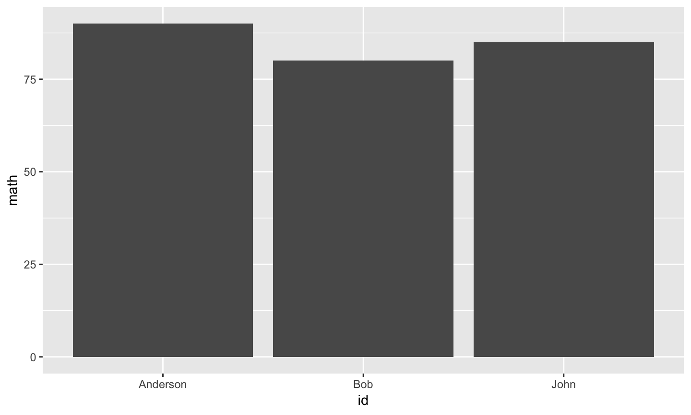
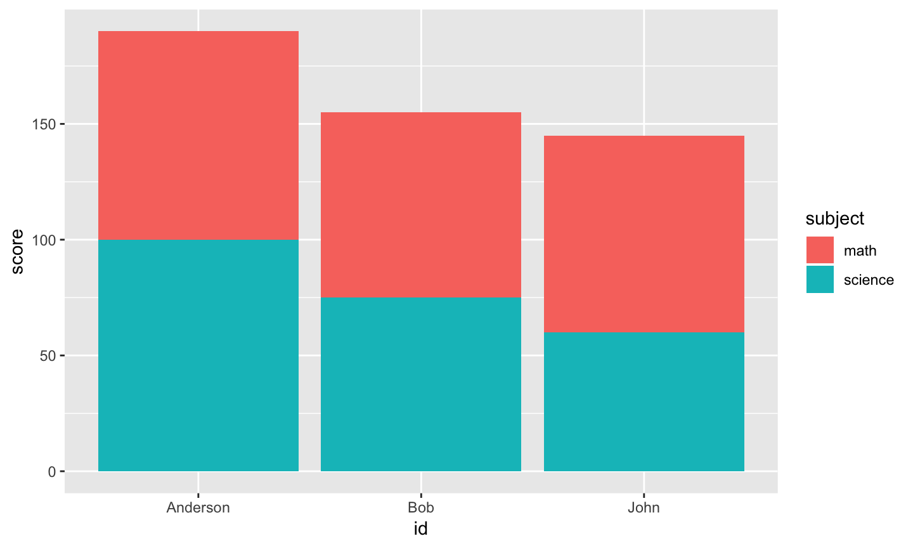
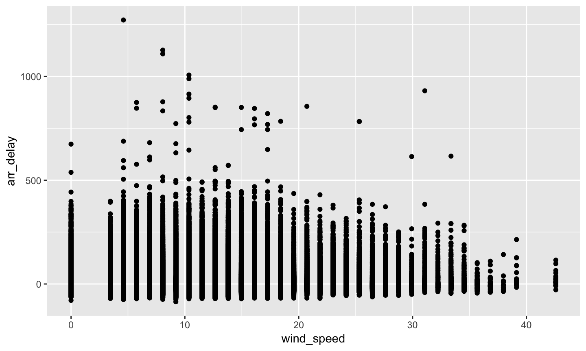
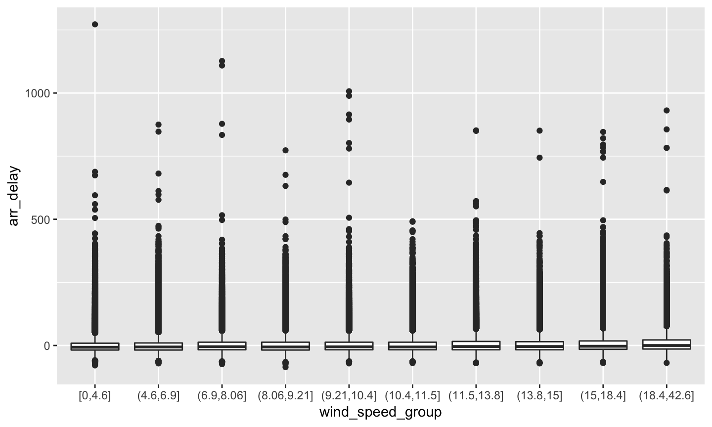

- 讀取CSV
dplyr的Verbs簡介- 資料整合
2019-05-11
大綱
讀取CSV
CSV的格式
- CSV: Comma-Separated Values

read.csv
read.csv("http://homepage.ntu.edu.tw/~wush978/rdataengineer/district_location.csv",
header = TRUE, nrows = 6)
## 行政區名 X_x0033_碼郵遞區號 中心點經度 中心點緯度 ## 1 臺北市中正區 100 121.5199 25.03240 ## 2 臺北市大同區 103 121.5130 25.06342 ## 3 臺北市中山區 104 121.5382 25.06970 ## 4 臺北市松山區 105 121.5576 25.05999 ## 5 臺北市大安區 106 121.5434 25.02677 ## 6 臺北市萬華區 108 121.4980 25.02859 ## TGOS_URL ## 1 http://tgos.nat.gov.tw/tgos/Web/MetaData/TGOS_MetaData_View.aspx?MID=9C715A5CD330360D355AE105F908B29E&SHOW_BACK_BUTTON=false ## 2 http://tgos.nat.gov.tw/tgos/Web/MetaData/TGOS_MetaData_View.aspx?MID=9C715A5CD330360D355AE105F908B29E&SHOW_BACK_BUTTON=false ## 3 http://tgos.nat.gov.tw/tgos/Web/MetaData/TGOS_MetaData_View.aspx?MID=9C715A5CD330360D355AE105F908B29E&SHOW_BACK_BUTTON=false ## 4 http://tgos.nat.gov.tw/tgos/Web/MetaData/TGOS_MetaData_View.aspx?MID=9C715A5CD330360D355AE105F908B29E&SHOW_BACK_BUTTON=false ## 5 http://tgos.nat.gov.tw/tgos/Web/MetaData/TGOS_MetaData_View.aspx?MID=9C715A5CD330360D355AE105F908B29E&SHOW_BACK_BUTTON=false ## 6 http://tgos.nat.gov.tw/tgos/Web/MetaData/TGOS_MetaData_View.aspx?MID=9C715A5CD330360D355AE105F908B29E&SHOW_BACK_BUTTON=false
read.table
read.csv("http://homepage.ntu.edu.tw/~wush978/rdataengineer/district_location.csv",
sep = ",", header = TRUE, nrows = 6)
## 行政區名 X_x0033_碼郵遞區號 中心點經度 中心點緯度 ## 1 臺北市中正區 100 121.5199 25.03240 ## 2 臺北市大同區 103 121.5130 25.06342 ## 3 臺北市中山區 104 121.5382 25.06970 ## 4 臺北市松山區 105 121.5576 25.05999 ## 5 臺北市大安區 106 121.5434 25.02677 ## 6 臺北市萬華區 108 121.4980 25.02859 ## TGOS_URL ## 1 http://tgos.nat.gov.tw/tgos/Web/MetaData/TGOS_MetaData_View.aspx?MID=9C715A5CD330360D355AE105F908B29E&SHOW_BACK_BUTTON=false ## 2 http://tgos.nat.gov.tw/tgos/Web/MetaData/TGOS_MetaData_View.aspx?MID=9C715A5CD330360D355AE105F908B29E&SHOW_BACK_BUTTON=false ## 3 http://tgos.nat.gov.tw/tgos/Web/MetaData/TGOS_MetaData_View.aspx?MID=9C715A5CD330360D355AE105F908B29E&SHOW_BACK_BUTTON=false ## 4 http://tgos.nat.gov.tw/tgos/Web/MetaData/TGOS_MetaData_View.aspx?MID=9C715A5CD330360D355AE105F908B29E&SHOW_BACK_BUTTON=false ## 5 http://tgos.nat.gov.tw/tgos/Web/MetaData/TGOS_MetaData_View.aspx?MID=9C715A5CD330360D355AE105F908B29E&SHOW_BACK_BUTTON=false ## 6 http://tgos.nat.gov.tw/tgos/Web/MetaData/TGOS_MetaData_View.aspx?MID=9C715A5CD330360D355AE105F908B29E&SHOW_BACK_BUTTON=false
read.csv與read.table的注意事項
- 預設會把
character vector轉成factor型態- 可以用參數
stringsAsFactors控制
- 可以用參數
- 實務上，R會猜欄位的型態（是
character,numeric還是呢？），這很慢- 可以用參數
colClasses直接告訴R答案，讀大資料會快很多
- 可以用參數
讀取CSV的可能錯誤：編碼問題
read.csv(url("http://homepage.ntu.edu.tw/~wush978/rdataengineer/district_location.csv", encoding = "BIG5"),
sep = ",", header = TRUE, nrows = 6)
## Warning in read.table(file = file, header = header, sep = sep, quote = ## quote, : 輸入連結 'http://homepage.ntu.edu.tw/~wush978/rdataengineer/ ## district_location.csv' 中的輸入不正確
## Warning in read.table(file = file, header = header, sep = sep, quote ## = quote, : incomplete final line found by readTableHeader on 'http:// ## homepage.ntu.edu.tw/~wush978/rdataengineer/district_location.csv'
## [1] 銵 ## <0 rows> (or 0-length row.names)
- 解法：先用
readLines處理或是用readBin處理後再讀取
讀取CSV的可能錯誤：欄位數量不一致
- 內文包含
","或分隔符號 - 資料有錯
read.csv("http://homepage.ntu.edu.tw/~wush978/rdataengineer/csv-error.csv")
## NAME ID ## Wush Chi-Hsuan Wu d12345678 ## Hsieh Johnson d12345679
- 用
readLines後手動用strsplit處理
小挑戰
x <- readLines("http://homepage.ntu.edu.tw/~wush978/rdataengineer/csv-error.csv")
- 請用程式找出兩位的學號
讀取CSV檔案的小撇步: colClasses 參數
read.csv與read.tablecolClasses參數可以加速
# source: https://support.spatialkey.com/spatialkey-sample-csv-data/
path <- tempfile(fileext = ".csv.gz")
download.file("http://homepage.ntu.edu.tw/~wush978/rdataengineer/FL_insurance_sample.csv.gz", destfile = path)
讀取CSV檔案的小撇步: colClasses 參數
readLines(gzfile(path), n = 6)
## [1] "policyID,statecode,county,eq_site_limit,hu_site_limit,fl_site_limit,fr_site_limit,tiv_2011,tiv_2012,eq_site_deductible,hu_site_deductible,fl_site_deductible,fr_site_deductible,point_latitude,point_longitude,line,construction,point_granularity" ## [2] "119736,FL,CLAY COUNTY,498960,498960,498960,498960,498960,792148.9,0,9979.2,0,0,30.102261,-81.711777,Residential,Masonry,1" ## [3] "448094,FL,CLAY COUNTY,1322376.3,1322376.3,1322376.3,1322376.3,1322376.3,1438163.57,0,0,0,0,30.063936,-81.707664,Residential,Masonry,3" ## [4] "206893,FL,CLAY COUNTY,190724.4,190724.4,190724.4,190724.4,190724.4,192476.78,0,0,0,0,30.089579,-81.700455,Residential,Wood,1" ## [5] "333743,FL,CLAY COUNTY,0,79520.76,0,0,79520.76,86854.48,0,0,0,0,30.063236,-81.707703,Residential,Wood,3" ## [6] "172534,FL,CLAY COUNTY,0,254281.5,0,254281.5,254281.5,246144.49,0,0,0,0,30.060614,-81.702675,Residential,Wood,1"
system.time( FL <- read.csv(gzfile(path), header = TRUE) )
## user system elapsed ## 0.288 0.010 0.298
讀取CSV檔案的小撇步: colClasses 參數
system.time({
FL.head <- read.csv(gzfile("FL_insurance_sample.csv.gz"), header = TRUE, nrows = 6)
.col <- sapply(FL.head, class)
.col[.col == "integer"] <- "numeric"
FL <- read.csv(gzfile("FL_insurance_sample.csv.gz"), header = TRUE, colClasses = .col)
})
## user system elapsed ## 0.170 0.008 0.184
讀取CSV檔案的小撇步: colClasses 參數
head(FL)
## policyID statecode county eq_site_limit hu_site_limit fl_site_limit ## 1 119736 FL CLAY COUNTY 498960.0 498960.00 498960.0 ## 2 448094 FL CLAY COUNTY 1322376.3 1322376.30 1322376.3 ## 3 206893 FL CLAY COUNTY 190724.4 190724.40 190724.4 ## 4 333743 FL CLAY COUNTY 0.0 79520.76 0.0 ## 5 172534 FL CLAY COUNTY 0.0 254281.50 0.0 ## 6 785275 FL CLAY COUNTY 0.0 515035.62 0.0 ## fr_site_limit tiv_2011 tiv_2012 eq_site_deductible ## 1 498960.0 498960.00 792148.90 0 ## 2 1322376.3 1322376.30 1438163.57 0 ## 3 190724.4 190724.40 192476.78 0 ## 4 0.0 79520.76 86854.48 0 ## 5 254281.5 254281.50 246144.49 0 ## 6 0.0 515035.62 884419.17 0 ## hu_site_deductible fl_site_deductible fr_site_deductible point_latitude ## 1 9979.2 0 0 30.10226 ## 2 0.0 0 0 30.06394 ## 3 0.0 0 0 30.08958 ## 4 0.0 0 0 30.06324 ## 5 0.0 0 0 30.06061 ## 6 0.0 0 0 30.06324 ## point_longitude line construction point_granularity ## 1 -81.71178 Residential Masonry 1 ## 2 -81.70766 Residential Masonry 3 ## 3 -81.70046 Residential Wood 1 ## 4 -81.70770 Residential Wood 3 ## 5 -81.70267 Residential Wood 1 ## 6 -81.70770 Residential Masonry 3
Database
- 作業在 Windows 上的 3.5 系列有bug，修復中
- 請Windows使用者用別的版本的R跑作業
- 什麼時候用 Database?
- 記憶體不夠
- 需要Transaction(多個操作中，只要一個失敗就全部復原)
Transaction
- 線上的資料處理上，在「容錯」上非常重要的「特性」
- 範例：
- 假設每小時產生一個檔案
out.path <- sprintf("%s.csv", format(Sys.time(), "%Y-%m-%d-%H"))
# do something
write(data, file = out.path)
Transaction
- 線上的資料處理上，在「容錯」上非常重要的「特性」
- 範例：
- 假設每小時產生一個檔案
- 寫入到一半的時候發生錯誤（斷電、當機）
- 自動重開機後又繼續跑，產生新的檔案
- 哪些檔案是錯的？
Transaction
out.path <- format(Sys.time(), "%Y-%m-%d-%H.csv") out.path.tmp <- paste(out.path, "tmp", sep = ".") write(data, file = out.path.tmp) # rename is transaction file.rename(out.path.tmp, out.path)
XML Tables
XML::readHTMLTableXML是比較老牌的XML處理工具- 資料結構比
xml2更難懂，但是比較穩(?) - 如果資料來源是結構化的HTML表格，
XML::readHTMLTable很方便
- 資料結構比
2018 縣市長大選台北即時估票
data.frame
- 由list物件擴充而成
- list + attributes
- 在R 語言中，處理「表格」(table)資料
- 表格 v.s. 矩陣、陣列
- 視覺化：ggplot2
- 許多進階分析的入口
- 例：迴歸分析(
lm) - 將表格的變數轉換成數學上的矩陣：
model.matrix\(\hat{\beta} = (X^TX)^{-1}(X^Ty)\)
- 例：迴歸分析(
data.frame 的 Create
- 注意參數：
stringsAsFactors
data.frame(student.id = 1:5, math.score = rpois(5, 5))
## student.id math.score ## 1 1 3 ## 2 2 8 ## 3 3 3 ## 4 4 4 ## 5 5 5
data.frame 的 Create
df <- read.csv(
url("https://raw.githubusercontent.com/wush978/DataScienceAndR/course/01-RBasic-07-Loading-Dataset/A_LVR_LAND_A.CSV", encoding = "BIG5"),
nrows = 6, header = TRUE)
df[,1:3]
## 鄉鎮市區 交易標的 土地區段位置或建物區門牌 ## 1 文山區 房地(土地+建物) 臺北市文山區木柵路二段109巷100弄61~90號 ## 2 中正區 房地(土地+建物) 臺北市中正區南海路1~30號 ## 3 中正區 房地(土地+建物) 臺北市中正區重慶南路三段121~150號 ## 4 文山區 房地(土地+建物) 臺北市文山區指南路三段32巷1~30號 ## 5 文山區 房地(土地+建物) 臺北市文山區羅斯福路五段92巷1弄1~30號 ## 6 文山區 房地(土地+建物) 臺北市文山區秀明路二段1~30號
data.frame 的 Read
- list的Read:
[、[[與$
df["鄉鎮市區"]
## 鄉鎮市區 ## 1 文山區 ## 2 中正區 ## 3 中正區 ## 4 文山區 ## 5 文山區 ## 6 文山區
data.frame 的 Read
- list的Read:
[、[[與$
df[["鄉鎮市區"]]
## [1] 文山區 中正區 中正區 文山區 文山區 文山區 ## Levels: 文山區 中正區
data.frame 的 Read
- list的Read:
[、[[與$
df$`鄉鎮市區`
## [1] 文山區 中正區 中正區 文山區 文山區 文山區 ## Levels: 文山區 中正區
data.frame 的 Read
[: 仍然是data.frame[[、$: data.frame(list)會被打破
data.frame 的 Read
- matrix的Read:
[
df[1,1]
## [1] 文山區 ## Levels: 文山區 中正區
df[1:2,1]
## [1] 文山區 中正區 ## Levels: 文山區 中正區
df[1,1:2]
## 鄉鎮市區 交易標的 ## 1 文山區 房地(土地+建物)
data.frame 的 Read
- matrix的Read:
[- 應仍然是data.frame
- 參數
drop = TRUE(預設)當欄位方向的維度為1時，會自動把data.frame轉成向量
df[1:2,1:2]
## 鄉鎮市區 交易標的 ## 1 文山區 房地(土地+建物) ## 2 中正區 房地(土地+建物)
df[1,1,drop = FALSE]
## 鄉鎮市區 ## 1 文山區
data.frame 的 Read
drop = TRUE是好事嘛？- Hadley 主導的 tidyverse
- 不是所有人都喜歡… tibbles are not data.frames
data.frame 的 Update
Read+<-
df <- data.frame( id = 1:5, score = sample(1:10, 5, TRUE)) df
## id score ## 1 1 4 ## 2 2 8 ## 3 3 5 ## 4 4 8 ## 5 5 5
df$score <- scale(df$score) df
## id score ## 1 1 -1.0690450 ## 2 2 1.0690450 ## 3 3 -0.5345225 ## 4 4 1.0690450 ## 5 5 -0.5345225
data.frame 的 Delete
- 反向Read
- Read +
<- NULL
df[-1,] # df[2:5,]
## id score ## 2 2 1.0690450 ## 3 3 -0.5345225 ## 4 4 1.0690450 ## 5 5 -0.5345225
df$score <- NULL df
## id ## 1 1 ## 2 2 ## 3 3 ## 4 4 ## 5 5
範例
iris的資料中Sepal.Length的平均- 各種
Species的平均Sepal.Length - 建立新的欄位：
std.Sepal.Length是標準化後的Sepal.Length - 建立新的欄位：
std.Sepal.Length是依照個別Species作標準化後的Sepal.Length
範例
- 各種
Species的平均Sepal.Length
ans <- c()
for(.sp in levels(iris$Species)) {
.i <- iris$Species == .sp
ans[.sp] <- mean(iris$Sepal.Length[.i])
}
ans
## setosa versicolor virginica ## 5.006 5.936 6.588
範例
- 各種
Species的平均Sepal.Length
# you can use `lapply` and then `unlist`
sapply(levels(iris$Species), function(.sp) {
.i <- iris$Species == .sp
mean(iris$Sepal.Length[.i])
})
## setosa versicolor virginica ## 5.006 5.936 6.588
範例
- 各種
Species的平均Sepal.Length
. <- split(iris, iris$Species) . <- lapply(., "[[", "Sepal.Length") sapply(., mean)
## setosa versicolor virginica ## 5.006 5.936 6.588
範例
- 各種
Species的平均Sepal.Length
aggregate(Sepal.Length ~ Species, iris, mean)
## Species Sepal.Length ## 1 setosa 5.006 ## 2 versicolor 5.936 ## 3 virginica 6.588
- 要理解這段expression，同學需要學會：
formula object- Aggregation functions
範例
- 建立新的欄位：
std.Sepal.Length是標準化後的Sepal.Length
ans <- iris # to backup the original object, we modify after copying . <- iris$Sepal.Length - mean(iris$Sepal.Length) . <- . / sd(iris$Sepal.Length) ans$std.Sepal.Length <- . ans[c(1,2,51,52,101,102),6,drop=FALSE]
## std.Sepal.Length ## 1 -0.89767388 ## 2 -1.13920048 ## 51 1.39682886 ## 52 0.67224905 ## 101 0.55148575 ## 102 -0.05233076
範例
- 建立新的欄位：
std.Sepal.Length是標準化後的Sepal.Length
ans <- iris # to backup the original object, we modify after copying ans$std.Sepal.Length <- scale(iris$Sepal.Length) ans[c(1,2,51,52,101,102),6,drop=FALSE]
## std.Sepal.Length ## 1 -0.89767388 ## 2 -1.13920048 ## 51 1.39682886 ## 52 0.67224905 ## 101 0.55148575 ## 102 -0.05233076
範例
- 建立新的欄位：
std.Sepal.Length是依照個別Species作標準化後的Sepal.Length
. <- iris$Sepal.Length
for(.sp in levels(iris$Species)) {
.i <- iris$Species == .sp
.[.i] <- scale(.[.i])
}
ans <- iris
ans$std.Sepal.Length <- .
ans[c(1,2,51,52,101,102),6,drop=FALSE]
## std.Sepal.Length ## 1 0.2666745 ## 2 -0.3007180 ## 51 2.0613318 ## 52 0.8989266 ## 101 -0.4529159 ## 102 -1.2392283
範例
- 建立新的欄位：
std.Sepal.Length是依照個別Species作標準化後的Sepal.Length
# This code will not work if the species is not ordered
. <- lapply(levels(iris$Species), function(.sp) {
.i <- iris$Species == .sp
scale(iris$Sepal.Length[.i])
})
ans <- iris
ans$std.Sepal.Length <- unlist(.)
ans[c(1,2,51,52,101,102),6,drop=FALSE]
## std.Sepal.Length ## 1 0.2666745 ## 2 -0.3007180 ## 51 2.0613318 ## 52 0.8989266 ## 101 -0.4529159 ## 102 -1.2392283
dplyr
參考SQL 資料庫系統對結構化資料的操作做設計
- 一般企業儲存結構化資料的工具
- 儲存所有資料的工具
- Transaction: 操作要嘛成功，要嘛無效
- SQL 資料庫的結構與操作是有數學代數在背後(Relational Algebra)
- R的data.frame v.s. SQL 資料庫
- memory v.s. disk
- indexing
- column based v.s. row based
- 一致的設計，讓同學可以透過
dplyr的語法寫SQL- 老師的經驗：比起用dplyr操作Database，還是直接寫 SQL 比較簡單… 但是可順便學SQL
- 有SQL經驗的同學可以快速上手R 的data.frame
dplyr 沒有完全相容於 data.frame
- 有時候，輸出的table不再是data.frame
- 為了效能
- 為了設計
- 因為Hadley(?)
- 有必要時可以使用
as.data.frame
Single Table verbs
- Read / Delete
filter、sliceselectsample_n、sample_frac
- Update
mutatearrange
- Others
summarisegroup_bydo
針對列作篩選：filter
head(iris[iris$Sepal.Length > 3,1,drop=FALSE])
## Sepal.Length ## 1 5.1 ## 2 4.9 ## 3 4.7 ## 4 4.6 ## 5 5.0 ## 6 5.4
head(filter(iris, Sepal.Length > 3)[,1,drop=FALSE])
## Sepal.Length ## 1 5.1 ## 2 4.9 ## 3 4.7 ## 4 4.6 ## 5 5.0 ## 6 5.4
針對列作篩選：filter
- 在
dplyr的函數中，iris$可以被省略- 解析順序：欄位名稱 –> 變數名稱
filter的第一個參數是要處理的data.frame物件- 所有的
dplyr函數都是這樣設計
- 所有的
filter的其他參數必須是一個布林向量，並且長度一致- 所有的這類參數，都是
TRUE的位置，才會回傳
- 所有的這類參數，都是
針對列作篩選：filter
head(filter(iris, Sepal.Length > 3, Sepal.Width < 3.5))
## Sepal.Length Sepal.Width Petal.Length Petal.Width Species ## 1 4.9 3.0 1.4 0.2 setosa ## 2 4.7 3.2 1.3 0.2 setosa ## 3 4.6 3.1 1.5 0.2 setosa ## 4 4.6 3.4 1.4 0.3 setosa ## 5 5.0 3.4 1.5 0.2 setosa ## 6 4.4 2.9 1.4 0.2 setosa
針對列作篩選：filter
head(filter(iris, Sepal.Length > 3, Sepal.Width < 3.5, Species == "versicolor"))
## Sepal.Length Sepal.Width Petal.Length Petal.Width Species ## 1 7.0 3.2 4.7 1.4 versicolor ## 2 6.4 3.2 4.5 1.5 versicolor ## 3 6.9 3.1 4.9 1.5 versicolor ## 4 5.5 2.3 4.0 1.3 versicolor ## 5 6.5 2.8 4.6 1.5 versicolor ## 6 5.7 2.8 4.5 1.3 versicolor
針對列作篩選：filter
a <- iris$Sepal.Length + iris$Sepal.Width head(filter(iris, Sepal.Length > 3, Sepal.Width < 3.5, a < 8))
## Sepal.Length Sepal.Width Petal.Length Petal.Width Species ## 1 4.9 3.0 1.4 0.2 setosa ## 2 4.7 3.2 1.3 0.2 setosa ## 3 4.6 3.1 1.5 0.2 setosa ## 4 4.4 2.9 1.4 0.2 setosa ## 5 4.8 3.0 1.4 0.1 setosa ## 6 4.3 3.0 1.1 0.1 setosa
針對列作篩選：slice
slice(iris, 1:6)
## Sepal.Length Sepal.Width Petal.Length Petal.Width Species ## 1 5.1 3.5 1.4 0.2 setosa ## 2 4.9 3.0 1.4 0.2 setosa ## 3 4.7 3.2 1.3 0.2 setosa ## 4 4.6 3.1 1.5 0.2 setosa ## 5 5.0 3.6 1.4 0.2 setosa ## 6 5.4 3.9 1.7 0.4 setosa
針對列作抽樣：sample_n、sample_frac
sample_n(iris, 6)[,1,drop=FALSE]
## Sepal.Length ## 1 5.6 ## 2 6.5 ## 3 4.4 ## 4 5.7 ## 5 6.1 ## 6 6.0
sample_frac(iris, 0.04)[,1,drop=FALSE]
## Sepal.Length ## 1 7.6 ## 2 6.3 ## 3 6.0 ## 4 6.3 ## 5 6.0 ## 6 6.6
針對欄位作篩選：select
head(select(iris, Sepal.Length))
## Sepal.Length ## 1 5.1 ## 2 4.9 ## 3 4.7 ## 4 4.6 ## 5 5.0 ## 6 5.4
針對欄位作篩選：select
head(select(iris, Sepal.Length, Sepal.Width))
## Sepal.Length Sepal.Width ## 1 5.1 3.5 ## 2 4.9 3.0 ## 3 4.7 3.2 ## 4 4.6 3.1 ## 5 5.0 3.6 ## 6 5.4 3.9
針對欄位作篩選：select
head(select(iris, starts_with("Sepal")))
## Sepal.Length Sepal.Width ## 1 5.1 3.5 ## 2 4.9 3.0 ## 3 4.7 3.2 ## 4 4.6 3.1 ## 5 5.0 3.6 ## 6 5.4 3.9
針對欄位作篩選：select
head(select(iris, Sepal.Length:Petal.Length))
## Sepal.Length Sepal.Width Petal.Length ## 1 5.1 3.5 1.4 ## 2 4.9 3.0 1.4 ## 3 4.7 3.2 1.3 ## 4 4.6 3.1 1.5 ## 5 5.0 3.6 1.4 ## 6 5.4 3.9 1.7
針對欄位作篩選：select
- 反向操作
head(select(iris, -Sepal.Length))
## Sepal.Width Petal.Length Petal.Width Species ## 1 3.5 1.4 0.2 setosa ## 2 3.0 1.4 0.2 setosa ## 3 3.2 1.3 0.2 setosa ## 4 3.1 1.5 0.2 setosa ## 5 3.6 1.4 0.2 setosa ## 6 3.9 1.7 0.4 setosa
針對欄位作篩選：select
- rename
head(select(iris, SL = Sepal.Length))
## SL ## 1 5.1 ## 2 4.9 ## 3 4.7 ## 4 4.6 ## 5 5.0 ## 6 5.4
更改資料(向量化)
- mutate
head(mutate(iris, Sepal = mean(Sepal.Length + Sepal.Width)))
## Sepal.Length Sepal.Width Petal.Length Petal.Width Species Sepal ## 1 5.1 3.5 1.4 0.2 setosa 8.900667 ## 2 4.9 3.0 1.4 0.2 setosa 8.900667 ## 3 4.7 3.2 1.3 0.2 setosa 8.900667 ## 4 4.6 3.1 1.5 0.2 setosa 8.900667 ## 5 5.0 3.6 1.4 0.2 setosa 8.900667 ## 6 5.4 3.9 1.7 0.4 setosa 8.900667
更改資料(向量化)
- mutate
head(mutate(iris, Sepal.Length = as.character(Sepal.Length)))
## Sepal.Length Sepal.Width Petal.Length Petal.Width Species ## 1 5.1 3.5 1.4 0.2 setosa ## 2 4.9 3.0 1.4 0.2 setosa ## 3 4.7 3.2 1.3 0.2 setosa ## 4 4.6 3.1 1.5 0.2 setosa ## 5 5 3.6 1.4 0.2 setosa ## 6 5.4 3.9 1.7 0.4 setosa
Aggregation: summarise
- 150 rows –> 1 row
summarise(iris, mean(Sepal.Length))
## mean(Sepal.Length) ## 1 5.843333
Aggregation: summarise
- 150 rows –> 2 row? error
summarise(iris, range(Sepal.Length))
## Error: Column `range(Sepal.Length)` must be length 1 (a summary value), not 2
Aggregation: do
- 150 rows –> 2 row
.isirishere
do(iris, data.frame(rSL = range(.$Sepal.Length)))
## rSL ## 1 4.3 ## 2 7.9
Aggregation的目的
- why
summarise?
summarise(iris, mean(Sepal.Length))[[1]]
## [1] 5.843333
mean(iris$Sepal.Length)
## [1] 5.843333
- Because
summarise/dorecognizegroup_by
Aggregation: group_by
- Default group is
irismutate/summarise/doapply the expressions to thegroup
- We can split
iristo several groups based on specific (categorical) variablecharacterorfactor
group_by(iris, Species) # Nothing happens
## # A tibble: 150 x 5 ## # Groups: Species [3] ## Sepal.Length Sepal.Width Petal.Length Petal.Width Species ## <dbl> <dbl> <dbl> <dbl> <fct> ## 1 5.1 3.5 1.4 0.2 setosa ## 2 4.9 3 1.4 0.2 setosa ## 3 4.7 3.2 1.3 0.2 setosa ## 4 4.6 3.1 1.5 0.2 setosa ## 5 5 3.6 1.4 0.2 setosa ## 6 5.4 3.9 1.7 0.4 setosa ## 7 4.6 3.4 1.4 0.3 setosa ## 8 5 3.4 1.5 0.2 setosa ## 9 4.4 2.9 1.4 0.2 setosa ## 10 4.9 3.1 1.5 0.1 setosa ## # … with 140 more rows
Aggregation: group_by + summarise
. <- group_by(iris, Species) summarise(., mean(Sepal.Length))
## # A tibble: 3 x 2 ## Species `mean(Sepal.Length)` ## <fct> <dbl> ## 1 setosa 5.01 ## 2 versicolor 5.94 ## 3 virginica 6.59
filter –> group_by
.x1 <- filter(iris, Species == "setosa") summarise(.x1, mean(Sepal.Length))
## mean(Sepal.Length) ## 1 5.006
filter –> group_by
.x1 <- filter(iris, Species == "setosa") .x2 <- filter(iris, Species == "versicolor") .x3 <- filter(iris, Species == "virginica") rbind( summarise(.x1, mean(Sepal.Length)), summarise(.x2, mean(Sepal.Length)), summarise(.x3, mean(Sepal.Length)) )
## mean(Sepal.Length) ## 1 5.006 ## 2 5.936 ## 3 6.588
Aggregation
- 透過
group_by把原本的data.frame切割成若干個groups - 之後的verbs會各自對個別的groups運作，一個group跑一次(會有多個data.frame)，最後再
rbind成為單一的data.frame
Aggregation: group_by + summarise
. <- group_by(iris, Species) summarise(., mean(Sepal.Length), mean(Sepal.Width))
## # A tibble: 3 x 3 ## Species `mean(Sepal.Length)` `mean(Sepal.Width)` ## <fct> <dbl> <dbl> ## 1 setosa 5.01 3.43 ## 2 versicolor 5.94 2.77 ## 3 virginica 6.59 2.97
Aggregation: group_by + summarise
- 結果的維度：
group 的數量\(\times\) ?- ?是所有在資料中出現的組合的個數
. <- group_by(iris, Species, floor(Petal.Length)) summarise(., mean(Sepal.Length), mean(Sepal.Width))
## # A tibble: 7 x 4 ## # Groups: Species [3] ## Species `floor(Petal.Length)` `mean(Sepal.Length)` `mean(Sepal.Width)` ## <fct> <dbl> <dbl> <dbl> ## 1 setosa 1 5.01 3.43 ## 2 versicolor 3 5.35 2.49 ## 3 versicolor 4 6.09 2.85 ## 4 versicolor 5 6.35 2.85 ## 5 virginica 4 5.85 2.8 ## 6 virginica 5 6.44 2.94 ## 7 virginica 6 7.43 3.16
Aggregation: group_by + do
. <- group_by(iris, Species)
do(., data.frame(type = c("min", "max"), r1 = range(.$Sepal.Length), r2 = range(.$Sepal.Width)))
## # A tibble: 6 x 4 ## # Groups: Species [3] ## Species type r1 r2 ## <fct> <fct> <dbl> <dbl> ## 1 setosa min 4.3 2.3 ## 2 setosa max 5.8 4.4 ## 3 versicolor min 4.9 2 ## 4 versicolor max 7 3.4 ## 5 virginica min 4.9 2.2 ## 6 virginica max 7.9 3.8
Aggregation: group_by + summarise
- 利用
browser詳細了解group_by與summarise
. <- group_by(iris, Species)
summarise(., SL = {
browser()
mean(Sepal.Length)
})
Aggregation: group_by + do
- 利用
browser詳細了解group_by與do - 在中斷點(
Browser[1]>之下)可檢閱變數.
. <- group_by(iris, Species)
do(., {
browser()
data.frame(r1 = range(Sepal.Length))
})
小挑戰
- 請嘗試用
dplyr的函數，從iris的資料中計算：Sepal.Length的平均(mean)- 各種
Species的平均Sepal.Length(mean) - 建立新的欄位：
std.Sepal.Length是標準化後的Sepal.Length(scale) - 建立新的欄位：
std.Sepal.Length是依照個別Species作標準化後的Sepal.Length(scale)
參考答案
- 建立新的欄位：
std.Sepal.Length是標準化後的Sepal.Length
mutate(iris, std.Sepal.Length = scale(Sepal.Length))[c(1,2,51,52,101,102),4:6]
## Petal.Width Species std.Sepal.Length ## 1 0.2 setosa -0.89767388 ## 2 0.2 setosa -1.13920048 ## 51 1.4 versicolor 1.39682886 ## 52 1.5 versicolor 0.67224905 ## 101 2.5 virginica 0.55148575 ## 102 1.9 virginica -0.05233076
參考答案
- 建立新的欄位：
std.Sepal.Length是依照個別Species作標準化後的Sepal.Length
. <- group_by(iris, Species) mutate(., std.Sepal.Length = scale(Sepal.Length))[c(1,2,51,52,101,102),4:6]
## # A tibble: 6 x 3 ## # Groups: Species [3] ## Petal.Width Species std.Sepal.Length ## <dbl> <fct> <dbl> ## 1 0.2 setosa 0.267 ## 2 0.2 setosa -0.301 ## 3 1.4 versicolor 2.06 ## 4 1.5 versicolor 0.899 ## 5 2.5 virginica -0.453 ## 6 1.9 virginica -1.24
從dplyr到SQL
- 每一個Single Table Verbs會對到SQL Keyword, Ex:
select–>SELECTfilter–>WHERE
從dplyr到SQL
suppressPackageStartupMessages(
library(sqldf)
)
sqldf("
SELECT `Sepal.Length` FROM iris
WHERE Species = 'setosa' LIMIT 6"
)
## Sepal.Length ## 1 5.1 ## 2 4.9 ## 3 4.7 ## 4 4.6 ## 5 5.0 ## 6 5.4
. <- filter(iris, Species == "setosa") . <- select(., Sepal.Length) slice(., 1:6)
## Sepal.Length ## 1 5.1 ## 2 4.9 ## 3 4.7 ## 4 4.6 ## 5 5.0 ## 6 5.4
從dplyr到SQL
- 同學仍然需要找機會學習SQL的expression規則
- SQL 在資料科學是比 R 還重要的存在
- 懂 dplyr 後學 SQL 的概念會很快，因為背後的設計相同（把那些verbs換個名詞而已）
- SQL 和 GROUP BY 與 dplyr 的 group_by都是 aggregation functions
- 但是在R 中我們可以用中斷點作探索，更快的理解aggregation functions
從dplyr到SQL
suppressPackageStartupMessages(library(dbplyr)) library(RSQLite) src <- src_sqlite(tempfile(fileext = ".db"), create = TRUE) copy_to(src, iris) iris.db <- tbl(src, "iris") filter(iris.db, Species == "versicolor")
## # Source: lazy query [?? x 5] ## # Database: sqlite 3.22.0 ## # [/var/folders/x6/z8_v_l4x1qjdwmzkc98sj0lw0000gp/T//Rtmp45nxGb/file1858c189d9a62.db] ## Sepal.Length Sepal.Width Petal.Length Petal.Width Species ## <dbl> <dbl> <dbl> <dbl> <chr> ## 1 7 3.2 4.7 1.4 versicolor ## 2 6.4 3.2 4.5 1.5 versicolor ## 3 6.9 3.1 4.9 1.5 versicolor ## 4 5.5 2.3 4 1.3 versicolor ## 5 6.5 2.8 4.6 1.5 versicolor ## 6 5.7 2.8 4.5 1.3 versicolor ## 7 6.3 3.3 4.7 1.6 versicolor ## 8 4.9 2.4 3.3 1 versicolor ## 9 6.6 2.9 4.6 1.3 versicolor ## 10 5.2 2.7 3.9 1.4 versicolor ## # … with more rows
從dplyr到SQL
- aggregation 會受到 database 的限制
suppressPackageStartupMessages(library(dbplyr)) library(RSQLite) src <- src_sqlite(tempfile(fileext = ".db"), create = TRUE) copy_to(src, iris) iris.db <- tbl(src, "iris") . <- group_by(iris.db, Species) do(., data.frame(r1 = range(.$Sepal.Length)))
## Error: No more ticks
Table 的種類
Wide Table
- row is an instance
- columns are attributes
df.wide <- data.frame(
id = c("Bob", "John", "Anderson"),
math = c(80, 85, 90),
science = c(75, 60, 100)
)
df.wide
## id math science ## 1 Bob 80 75 ## 2 John 85 60 ## 3 Anderson 90 100
Tall Table
- 又稱為 narrow 或 stacked data
library(reshape2) df.tall <- melt(df.wide, variable.name = "subject", value.name = "score")
## Using id as id variables
df.tall
## id subject score ## 1 Bob math 80 ## 2 John math 85 ## 3 Anderson math 90 ## 4 Bob science 75 ## 5 John science 60 ## 6 Anderson science 100
Tall Table –> Wide Table (Pivoting)
library(reshape2) dcast(df.tall, id ~ subject)
## Using score as value column: use value.var to override.
## id math science ## 1 Anderson 90 100 ## 2 Bob 80 75 ## 3 John 85 60
# stats::reshape(df.tall, idvar = "id", # v.names = "score", timevar = "subject", # direction = "wide")
- wide table 在現實生活很常見，但是會有什麼問題呢？
wide table 的限制，以ggplot2為例
- 在
df.wide上比較math 或 science 很容易
library(ggplot2) ggplot(df.wide, aes(x = id, y = math)) + geom_bar(stat = "identity")

wide table 的限制，以ggplot2為例
- 但是怎麼同時比較
math與science?
範例：ggplot2
- ggplot2 is more friendly to tall table
library(ggplot2) ggplot(df.tall, aes(x = id, y = score, fill = subject)) + geom_bar(stat = "identity")

Wide Table –> Tall Table
library(reshape2) df.tall <- melt(df.wide, variable.name = "subject", value.name = "score")
Wide Table –> Tall Table
. <- iris .$id <- rownames(iris) iris.tall <- melt( ., variable.name = "measurement", value.name = "value", id.vars = "id", stringsAsFactors = FALSE)
## Warning: attributes are not identical across measure variables; they will ## be dropped
filter(iris.tall, id == "1")
## id measurement value ## 1 1 Sepal.Length 5.1 ## 2 1 Sepal.Width 3.5 ## 3 1 Petal.Length 1.4 ## 4 1 Petal.Width 0.2 ## 5 1 Species setosa
Wide Table v.s. Tall Table
- Wide Table 每一列要對應到一個instance
- Tall Table 要有一個欄位（會重複）代表identity
- 相同的identity代表相同的instance
- 我不知道對於這兩種table的嚴謹定義。實務上，也是有Table會介於兩者之間
- 重點在於了解wide table與tall table適合使用的情境
- 必要時需要作轉型
df.tall
## id subject score ## 1 Bob math 80 ## 2 John math 85 ## 3 Anderson math 90 ## 4 Bob science 75 ## 5 John science 60 ## 6 Anderson science 100
小挑戰
- 請問
iris算是 wide table 還是 tall table?
slice(iris, c(1, 2, 51, 52, 101, 102))
## Sepal.Length Sepal.Width Petal.Length Petal.Width Species ## 1 5.1 3.5 1.4 0.2 setosa ## 2 4.9 3.0 1.4 0.2 setosa ## 3 7.0 3.2 4.7 1.4 versicolor ## 4 6.4 3.2 4.5 1.5 versicolor ## 5 6.3 3.3 6.0 2.5 virginica ## 6 5.8 2.7 5.1 1.9 virginica
小挑戰
- 請問
cars算是 wide table 還是 tall table?
cars
## speed dist ## 1 4 2 ## 2 4 10 ## 3 7 4 ## 4 7 22 ## 5 8 16 ## 6 9 10 ## 7 10 18 ## 8 10 26 ## 9 10 34 ## 10 11 17 ## 11 11 28 ## 12 12 14 ## 13 12 20 ## 14 12 24 ## 15 12 28 ## 16 13 26 ## 17 13 34 ## 18 13 34 ## 19 13 46 ## 20 14 26 ## 21 14 36 ## 22 14 60 ## 23 14 80 ## 24 15 20 ## 25 15 26 ## 26 15 54 ## 27 16 32 ## 28 16 40 ## 29 17 32 ## 30 17 40 ## 31 17 50 ## 32 18 42 ## 33 18 56 ## 34 18 76 ## 35 18 84 ## 36 19 36 ## 37 19 46 ## 38 19 68 ## 39 20 32 ## 40 20 48 ## 41 20 52 ## 42 20 56 ## 43 20 64 ## 44 22 66 ## 45 23 54 ## 46 24 70 ## 47 24 92 ## 48 24 93 ## 49 24 120 ## 50 25 85
Wide Table v.s. Tall Table
- Wide Table的好處
- 比較容易閱讀、空間比較省
- 適合作aggregation
- 適合作modeling
- Tall Table的好處
- 增加測量的類型時，不用對舊的資料造成破壞
- ggplot2
對iris計算各個Species的平均
. <- group_by(iris, Species) summarise_all(., mean)
## # A tibble: 3 x 5 ## Species Sepal.Length Sepal.Width Petal.Length Petal.Width ## <fct> <dbl> <dbl> <dbl> <dbl> ## 1 setosa 5.01 3.43 1.46 0.246 ## 2 versicolor 5.94 2.77 4.26 1.33 ## 3 virginica 6.59 2.97 5.55 2.03
對iris.tall計算各個Species的平均
species <- filter(iris.tall, measurement == "Species")
species <- unique(species$value)
measurements <- unique(iris.tall$measurement)
measurements <- as.character(measurements)
measurements <- setdiff(measurements, "Species")
result <- data.frame(
Species = species
)
for(m in measurements) {
result[[m]] <- numeric(nrow(result))
}
for(i in 1:length(species)) {
current.species <- filter(iris.tall, measurement == "Species", value == species[i])
#.$id
for(j in c("Sepal.Length", "Sepal.Width", "Petal.Length", "Petal.Width")) {
. <- filter(iris.tall, measurement == j, id %in% current.species$id)
result[[j]][i] <- mean(as.numeric(.$value))
}
}
對iris.tall計算各個Species的平均
. <- stats::reshape(
iris.tall, v.names = "value",
timevar = "measurement", direction = "wide")
. <- select(., value.Sepal.Length : value.Species)
for(j in 1:4) {
.[[j]] <- as.numeric(.[[j]])
}
. <- group_by(., value.Species)
summarise_all(., mean)
## # A tibble: 3 x 5 ## value.Species value.Sepal.Len… value.Sepal.Wid… value.Petal.Len… ## <chr> <dbl> <dbl> <dbl> ## 1 setosa 5.01 3.43 1.46 ## 2 versicolor 5.94 2.77 4.26 ## 3 virginica 6.59 2.97 5.55 ## # … with 1 more variable: value.Petal.Width <dbl>
pipeline operator
資料處理就是一個連續組合動作
. <- filter(iris, Species == "setosa") . <- select(., Sepal.Length) head(., 6)
## Sepal.Length ## 1 5.1 ## 2 4.9 ## 3 4.7 ## 4 4.6 ## 5 5.0 ## 6 5.4
運用中間變數
.永遠是中間變數，不會混用- 常見的還有
x、y、i… - 但是中間變數的名字越多，越容易混淆
- 常見的還有
for(i in ...) {
...
for(i in ...) { # i is duplicated
...
}
... # i has been changed
}
解決辦法：保持environment的乾淨
- 中間變數一律用
.開頭- 預設會隱藏這些變數
- nested function call
head(select(filter(iris, Species == "setosa"), Sepal.Length), 6)
## Sepal.Length ## 1 5.1 ## 2 4.9 ## 3 4.7 ## 4 4.6 ## 5 5.0 ## 6 5.4
解決辦法：pipeline operator %>%
%>%會把左邊的expression的結果，當成右邊函數呼叫的第一個參數- 參數對應的方式：先比對名稱，再按照順序
filter(iris, Species == "setosa") %>% select(Sepal.Length) %>% head(6)
## Sepal.Length ## 1 5.1 ## 2 4.9 ## 3 4.7 ## 4 4.6 ## 5 5.0 ## 6 5.4
%>% 細解
# . <- filter(iris, Species == "setosa") filter(iris, Species == "setosa") %>% # . <- select(., Sepal.Length) select(Sepal.Length) %>% # head(., 6) head(6)
## Sepal.Length ## 1 5.1 ## 2 4.9 ## 3 4.7 ## 4 4.6 ## 5 5.0 ## 6 5.4
範例
# . <- group_by(iris, Species) group_by(iris, Species) %>% # . <- mutate(., std.Sepal.Length = scale(Sepal.Length)) mutate(std.Sepal.Length = scale(Sepal.Length)) %>% # .[,4:6] `[`(,4:6)
## # A tibble: 150 x 3 ## # Groups: Species [3] ## Petal.Width Species std.Sepal.Length ## <dbl> <fct> <dbl> ## 1 0.2 setosa 0.267 ## 2 0.2 setosa -0.301 ## 3 0.2 setosa -0.868 ## 4 0.2 setosa -1.15 ## 5 0.2 setosa -0.0170 ## 6 0.4 setosa 1.12 ## 7 0.3 setosa -1.15 ## 8 0.2 setosa -0.0170 ## 9 0.2 setosa -1.72 ## 10 0.1 setosa -0.301 ## # … with 140 more rows
%>% 與 .
%>%左邊的運算結果，可以在右邊的expression中以.變數呼叫
sample(1:10) %>% paste0(LETTERS[.])
## [1] "5E" "7G" "4D" "1A" "6F" "10J" "2B" "9I" "8H" "3C"
# . <- sample(1:10) # paste0(., LETTERS[.])
挑戰
- 同學可以嘗試用pipeline operator來寫出清理資料的程式
- 在思考上，會和過去的經驗不太相同
- 程式碼較容易閱讀與複製
# 我們想要複製 `select(., Sepal.Length)` 之後 `head(., 6)`這兩個動作 head(select(filter(iris, Species == "setosa"), Sepal.Length), 6) # --> head(select(filter(iris, Species == "versicolor"), Sepal.Length), 6) filter(iris, Species == "setosa") %>% select(Sepal.Length) %>% head(6) # --> filter(iris, Species == "versicolor") %>% select(Sepal.Length) %>% head(6)
資料整合
資料科學團隊
- Hello World: Dashboard
- 資料清理
- 檢查資料
- 確認分析的方向
- Next Step: 資料整合
- 有怎麼樣的整合是過去沒有人試過的？
- 分析資料就像是從水果（分析）中榨取果汁（價值）
- 從沒被榨取過得資料中獲得價值更容易

資料整合的挑戰
- 考驗著公司的資料工程成熟度
公司的資料工程等級
沒有資料工程，就沒有資料科學
- Lv1: 有收集資料
- Lv2: 有即時的資料可以用
- Lv3: 有逐筆的資料可以用
- Lv4: 有建立即時模型(整合Lv2與Lv3)
Lv1: 有收集資料
- 有在收集數據
- 工廠的感測器的數據
- 網站上使用者的行為紀錄
- 手機的訊號紀錄
- 網路裝置的訊號紀錄
- 顧客的購買紀錄
- 顧客的客訴紀錄
Lv1: 有收集資料，但是沒有處理資料的架構
- 數據有（暫時地）儲存到硬碟
- 若需要檢查過去的數據，概念上辦得到，但是實際取出需要很長的時間

Lv2: 有即時的資料可以用
- 場區過去一小時的平均溫度
- 使用者的點擊次數累計
- 顧客的購買次數、購買金額
Lv2 實做
- 若只要單純的功能，則不需要太大量的計算資源
- 越要求穩定、可靠，則需要越多的資源
- 可以做出Dashboard、可以跑統計、作趨勢的預測

Lv2: 沒有存取歷史資料的架構
- 若需要檢查過去的數據，但是實際取出需要很長的時間
- 任何改動都需要時間累計、無法回朔
- 沒辦法跑深度的分析
- 通常由工程師兼差維護資料系統
Lv3: 有逐筆的資料可以用
- 提供存取歷史數據的架構
- Hadoop
- Spark

Lv3: 有逐筆的資料可以用
- 可以作大量數據的資料整合
- 可以作線下的複雜模型分析、進行實驗
- 由專職的團隊維護數據系統

資料工程之路
- 程式之路：功能–>效能–>穩定
- 資料工程的需求：有資料–>能統計的資料–>能整合的資料–>能分析的資料–>可靠的資料
dplyr two tables
nycflights13: Flights that Departed NYC in 2013
library(nycflights13) data(flights) head(flights)
## # A tibble: 6 x 19 ## year month day dep_time sched_dep_time dep_delay arr_time ## <int> <int> <int> <int> <int> <dbl> <int> ## 1 2013 1 1 517 515 2 830 ## 2 2013 1 1 533 529 4 850 ## 3 2013 1 1 542 540 2 923 ## 4 2013 1 1 544 545 -1 1004 ## 5 2013 1 1 554 600 -6 812 ## 6 2013 1 1 554 558 -4 740 ## # … with 12 more variables: sched_arr_time <int>, arr_delay <dbl>, ## # carrier <chr>, flight <int>, tailnum <chr>, origin <chr>, dest <chr>, ## # air_time <dbl>, distance <dbl>, hour <dbl>, minute <dbl>, ## # time_hour <dttm>
# View(head(flights))
nycflights13: Flights that Departed NYC in 2013
?flights可以看到個別欄位的說明
航空公司的全名
data(airlines) head(airlines)
## # A tibble: 6 x 2 ## carrier name ## <chr> <chr> ## 1 9E Endeavor Air Inc. ## 2 AA American Airlines Inc. ## 3 AS Alaska Airlines Inc. ## 4 B6 JetBlue Airways ## 5 DL Delta Air Lines Inc. ## 6 EV ExpressJet Airlines Inc.
# View(airlines)
第一筆資料的航空公司全名
flights$carrier[1]
## [1] "UA"
filter(airlines, carrier == flights$carrier[1])
## # A tibble: 1 x 2 ## carrier name ## <chr> <chr> ## 1 UA United Air Lines Inc.
第三筆資料的航空公司全名
flights$carrier[3]
## [1] "AA"
filter(airlines, carrier == flights$carrier[3])
## # A tibble: 1 x 2 ## carrier name ## <chr> <chr> ## 1 AA American Airlines Inc.
所有資料的航空公司全名
- 對
flights建立變數name代表該筆資料的航空公司名稱
.i <- match(flights$carrier, airlines$carrier) stopifnot(flights$carrier == airlines$carrier[.i]) flights2 <- flights flights2$name <- airlines$name[.i]
比對

Key: carrier
- 根據
carrier的值，比對flights的資料與airlines的資料
小練習
- 請問各航空公司的起飛時間的平均延遲是？
- 請問各航空公司的到達時間的平均延遲是？
小練習
- 直接作
group_by(flights2, name) %>% summarise(mean(dep_delay))
## # A tibble: 16 x 2 ## name `mean(dep_delay)` ## <chr> <dbl> ## 1 AirTran Airways Corporation NA ## 2 Alaska Airlines Inc. NA ## 3 American Airlines Inc. NA ## 4 Delta Air Lines Inc. NA ## 5 Endeavor Air Inc. NA ## 6 Envoy Air NA ## 7 ExpressJet Airlines Inc. NA ## 8 Frontier Airlines Inc. NA ## 9 Hawaiian Airlines Inc. 4.90 ## 10 JetBlue Airways NA ## 11 Mesa Airlines Inc. NA ## 12 SkyWest Airlines Inc. NA ## 13 Southwest Airlines Co. NA ## 14 United Air Lines Inc. NA ## 15 US Airways Inc. NA ## 16 Virgin America NA
小練習
- 處理
NA
mean(is.na(flights2$dep_delay))
## [1] 0.02451184
group_by(flights2, name) %>% summarise(mean(is.na(dep_delay)))
## # A tibble: 16 x 2 ## name `mean(is.na(dep_delay))` ## <chr> <dbl> ## 1 AirTran Airways Corporation 0.0224 ## 2 Alaska Airlines Inc. 0.00280 ## 3 American Airlines Inc. 0.0194 ## 4 Delta Air Lines Inc. 0.00725 ## 5 Endeavor Air Inc. 0.0566 ## 6 Envoy Air 0.0467 ## 7 ExpressJet Airlines Inc. 0.0520 ## 8 Frontier Airlines Inc. 0.00438 ## 9 Hawaiian Airlines Inc. 0 ## 10 JetBlue Airways 0.00853 ## 11 Mesa Airlines Inc. 0.0932 ## 12 SkyWest Airlines Inc. 0.0938 ## 13 Southwest Airlines Co. 0.0156 ## 14 United Air Lines Inc. 0.0117 ## 15 US Airways Inc. 0.0323 ## 16 Virgin America 0.00601
小練習
- 移除
NA
group_by(flights2, name) %>% summarise(mean(dep_delay, na.rm = TRUE))
## # A tibble: 16 x 2 ## name `mean(dep_delay, na.rm = TRUE)` ## <chr> <dbl> ## 1 AirTran Airways Corporation 18.7 ## 2 Alaska Airlines Inc. 5.80 ## 3 American Airlines Inc. 8.59 ## 4 Delta Air Lines Inc. 9.26 ## 5 Endeavor Air Inc. 16.7 ## 6 Envoy Air 10.6 ## 7 ExpressJet Airlines Inc. 20.0 ## 8 Frontier Airlines Inc. 20.2 ## 9 Hawaiian Airlines Inc. 4.90 ## 10 JetBlue Airways 13.0 ## 11 Mesa Airlines Inc. 19.0 ## 12 SkyWest Airlines Inc. 12.6 ## 13 Southwest Airlines Co. 17.7 ## 14 United Air Lines Inc. 12.1 ## 15 US Airways Inc. 3.78 ## 16 Virgin America 12.9
dplyr::left_join
data(flights) left_join(flights, airlines, by = "carrier")
## # A tibble: 336,776 x 20 ## year month day dep_time sched_dep_time dep_delay arr_time ## <int> <int> <int> <int> <int> <dbl> <int> ## 1 2013 1 1 517 515 2 830 ## 2 2013 1 1 533 529 4 850 ## 3 2013 1 1 542 540 2 923 ## 4 2013 1 1 544 545 -1 1004 ## 5 2013 1 1 554 600 -6 812 ## 6 2013 1 1 554 558 -4 740 ## 7 2013 1 1 555 600 -5 913 ## 8 2013 1 1 557 600 -3 709 ## 9 2013 1 1 557 600 -3 838 ## 10 2013 1 1 558 600 -2 753 ## # … with 336,766 more rows, and 13 more variables: sched_arr_time <int>, ## # arr_delay <dbl>, carrier <chr>, flight <int>, tailnum <chr>, ## # origin <chr>, dest <chr>, air_time <dbl>, distance <dbl>, hour <dbl>, ## # minute <dbl>, time_hour <dttm>, name <chr>
dplyr::left_join
data(flights) left_join(flights, airlines)
## Joining, by = "carrier"
## # A tibble: 336,776 x 20 ## year month day dep_time sched_dep_time dep_delay arr_time ## <int> <int> <int> <int> <int> <dbl> <int> ## 1 2013 1 1 517 515 2 830 ## 2 2013 1 1 533 529 4 850 ## 3 2013 1 1 542 540 2 923 ## 4 2013 1 1 544 545 -1 1004 ## 5 2013 1 1 554 600 -6 812 ## 6 2013 1 1 554 558 -4 740 ## 7 2013 1 1 555 600 -5 913 ## 8 2013 1 1 557 600 -3 709 ## 9 2013 1 1 557 600 -3 838 ## 10 2013 1 1 558 600 -2 753 ## # … with 336,766 more rows, and 13 more variables: sched_arr_time <int>, ## # arr_delay <dbl>, carrier <chr>, flight <int>, tailnum <chr>, ## # origin <chr>, dest <chr>, air_time <dbl>, distance <dbl>, hour <dbl>, ## # minute <dbl>, time_hour <dttm>, name <chr>
dplyr::left_join的參數
args(dplyr::left_join)
## function (x, y, by = NULL, copy = FALSE, suffix = c(".x", ".y"),
## ...)
## NULL
dplyr::left_join: by參數
Key的重要性
- 整合結構化資料時，最重要的就是要先找到（產生）共同的Key
- 我個人實務上最常用的是
left_join- 資訊的黏貼
y上不唯一的Key
head(flights) %>% left_join(airlines) %>% select(carrier, name)
## Joining, by = "carrier"
## # A tibble: 6 x 2 ## carrier name ## <chr> <chr> ## 1 UA United Air Lines Inc. ## 2 UA United Air Lines Inc. ## 3 AA American Airlines Inc. ## 4 B6 JetBlue Airways ## 5 DL Delta Air Lines Inc. ## 6 UA United Air Lines Inc.
y上不唯一的Key
head(flights) %>% left_join(rbind(airlines, data.frame(carrier = "UA", name = "duplicated"))) %>% select(carrier, name)
## Joining, by = "carrier"
## # A tibble: 9 x 2 ## carrier name ## <chr> <chr> ## 1 UA United Air Lines Inc. ## 2 UA duplicated ## 3 UA United Air Lines Inc. ## 4 UA duplicated ## 5 AA American Airlines Inc. ## 6 B6 JetBlue Airways ## 7 DL Delta Air Lines Inc. ## 8 UA United Air Lines Inc. ## 9 UA duplicated
機場的天氣
data(weather) head(weather)
## # A tibble: 6 x 15 ## origin year month day hour temp dewp humid wind_dir wind_speed ## <chr> <dbl> <dbl> <int> <int> <dbl> <dbl> <dbl> <dbl> <dbl> ## 1 EWR 2013 1 1 1 39.0 26.1 59.4 270 10.4 ## 2 EWR 2013 1 1 2 39.0 27.0 61.6 250 8.06 ## 3 EWR 2013 1 1 3 39.0 28.0 64.4 240 11.5 ## 4 EWR 2013 1 1 4 39.9 28.0 62.2 250 12.7 ## 5 EWR 2013 1 1 5 39.0 28.0 64.4 260 12.7 ## 6 EWR 2013 1 1 6 37.9 28.0 67.2 240 11.5 ## # … with 5 more variables: wind_gust <dbl>, precip <dbl>, pressure <dbl>, ## # visib <dbl>, time_hour <dttm>
# View(weather) # ?weather
直接left_join
left_join(flights, weather) %>% head()
## Joining, by = c("year", "month", "day", "origin", "hour", "time_hour")
## # A tibble: 6 x 28 ## year month day dep_time sched_dep_time dep_delay arr_time ## <dbl> <dbl> <int> <int> <int> <dbl> <int> ## 1 2013 1 1 517 515 2 830 ## 2 2013 1 1 533 529 4 850 ## 3 2013 1 1 542 540 2 923 ## 4 2013 1 1 544 545 -1 1004 ## 5 2013 1 1 554 600 -6 812 ## 6 2013 1 1 554 558 -4 740 ## # … with 21 more variables: sched_arr_time <int>, arr_delay <dbl>, ## # carrier <chr>, flight <int>, tailnum <chr>, origin <chr>, dest <chr>, ## # air_time <dbl>, distance <dbl>, hour <dbl>, minute <dbl>, ## # time_hour <dttm>, temp <dbl>, dewp <dbl>, humid <dbl>, wind_dir <dbl>, ## # wind_speed <dbl>, wind_gust <dbl>, precip <dbl>, pressure <dbl>, ## # visib <dbl>
airports
data(airports) head(airports)
## # A tibble: 6 x 8 ## faa name lat lon alt tz dst tzone ## <chr> <chr> <dbl> <dbl> <int> <dbl> <chr> <chr> ## 1 04G Lansdowne Airport 41.1 -80.6 1044 -5 A America/New… ## 2 06A Moton Field Municipal A… 32.5 -85.7 264 -6 A America/Chi… ## 3 06C Schaumburg Regional 42.0 -88.1 801 -6 A America/Chi… ## 4 06N Randall Airport 41.4 -74.4 523 -5 A America/New… ## 5 09J Jekyll Island Airport 31.1 -81.4 11 -5 A America/New… ## 6 0A9 Elizabethton Municipal … 36.4 -82.2 1593 -5 A America/New…
# View(airports) # ?airports
airports
left_join(flights, airports, by = c("origin" = "faa")) %>%
head()
## # A tibble: 6 x 26 ## year month day dep_time sched_dep_time dep_delay arr_time ## <int> <int> <int> <int> <int> <dbl> <int> ## 1 2013 1 1 517 515 2 830 ## 2 2013 1 1 533 529 4 850 ## 3 2013 1 1 542 540 2 923 ## 4 2013 1 1 544 545 -1 1004 ## 5 2013 1 1 554 600 -6 812 ## 6 2013 1 1 554 558 -4 740 ## # … with 19 more variables: sched_arr_time <int>, arr_delay <dbl>, ## # carrier <chr>, flight <int>, tailnum <chr>, origin <chr>, dest <chr>, ## # air_time <dbl>, distance <dbl>, hour <dbl>, minute <dbl>, ## # time_hour <dttm>, name <chr>, lat <dbl>, lon <dbl>, alt <int>, ## # tz <dbl>, dst <chr>, tzone <chr>
airports
- 同時整合起點與終點
left_join(flights, airports, by = c("origin" = "faa")) %>%
left_join(airports, by = c("dest" = "faa")) %>%
colnames()
## [1] "year" "month" "day" "dep_time" ## [5] "sched_dep_time" "dep_delay" "arr_time" "sched_arr_time" ## [9] "arr_delay" "carrier" "flight" "tailnum" ## [13] "origin" "dest" "air_time" "distance" ## [17] "hour" "minute" "time_hour" "name.x" ## [21] "lat.x" "lon.x" "alt.x" "tz.x" ## [25] "dst.x" "tzone.x" "name.y" "lat.y" ## [29] "lon.y" "alt.y" "tz.y" "dst.y" ## [33] "tzone.y"
airports
suffix參數
left_join(flights, airports, by = c("origin" = "faa")) %>%
left_join(airports, by = c("dest" = "faa"), suffix = c(".origin", ".dest")) %>%
colnames()
## [1] "year" "month" "day" "dep_time" ## [5] "sched_dep_time" "dep_delay" "arr_time" "sched_arr_time" ## [9] "arr_delay" "carrier" "flight" "tailnum" ## [13] "origin" "dest" "air_time" "distance" ## [17] "hour" "minute" "time_hour" "name.origin" ## [21] "lat.origin" "lon.origin" "alt.origin" "tz.origin" ## [25] "dst.origin" "tzone.origin" "name.dest" "lat.dest" ## [29] "lon.dest" "alt.dest" "tz.dest" "dst.dest" ## [33] "tzone.dest"
小練習
- 起飛機場的風速對抵達時間的延遲是不是有影響?
小練習
- 先看看風速與的抵達時間延遲的關係
left_join(flights, weather) %>% select(wind_speed, arr_delay)
## Joining, by = c("year", "month", "day", "origin", "hour", "time_hour")
## # A tibble: 336,776 x 2 ## wind_speed arr_delay ## <dbl> <dbl> ## 1 12.7 11 ## 2 15.0 20 ## 3 15.0 33 ## 4 15.0 -18 ## 5 16.1 -25 ## 6 12.7 12 ## 7 11.5 19 ## 8 16.1 -14 ## 9 13.8 -8 ## 10 16.1 8 ## # … with 336,766 more rows
小練習
- 為什麼有
NA? 是不是因為：有weather資料的地點不多？
問資料
table(flights$origin)
## ## EWR JFK LGA ## 120835 111279 104662
table(weather$origin)
## ## EWR JFK LGA ## 8703 8706 8706
小練習
- 是不是有
time_hour欄位才導致NA？
問資料
select(flights, -time_hour) %>% left_join(weather) %>% select(wind_speed, arr_delay)
## Joining, by = c("year", "month", "day", "origin", "hour")
## # A tibble: 336,776 x 2 ## wind_speed arr_delay ## <dbl> <dbl> ## 1 12.7 11 ## 2 15.0 20 ## 3 15.0 33 ## 4 15.0 -18 ## 5 16.1 -25 ## 6 12.7 12 ## 7 11.5 19 ## 8 16.1 -14 ## 9 13.8 -8 ## 10 16.1 8 ## # … with 336,766 more rows
小練習
- 是不是比對失敗導致
NA?
問資料
select(flights, year, month, day, origin, hour, time_hour) %>% slice(1)
## # A tibble: 1 x 6 ## year month day origin hour time_hour ## <int> <int> <int> <chr> <dbl> <dttm> ## 1 2013 1 1 EWR 5 2013-01-01 05:00:00
filter(weather, year == 2013, month == 1, day == 1, origin == "EWR", hour == 5., time_hour == flights$time_hour[1])
## # A tibble: 1 x 15 ## origin year month day hour temp dewp humid wind_dir wind_speed ## <chr> <dbl> <dbl> <int> <int> <dbl> <dbl> <dbl> <dbl> <dbl> ## 1 EWR 2013 1 1 5 39.0 28.0 64.4 260 12.7 ## # … with 5 more variables: wind_gust <dbl>, precip <dbl>, pressure <dbl>, ## # visib <dbl>, time_hour <dttm>
小練習
weather有漏失資料嘛？
問資料
filter(weather, year == 2013, month == 1, day == 1, origin == "EWR") %>% arrange(hour) %>% select(hour)
## # A tibble: 22 x 1 ## hour ## <int> ## 1 1 ## 2 2 ## 3 3 ## 4 4 ## 5 5 ## 6 6 ## 7 7 ## 8 8 ## 9 9 ## 10 10 ## # … with 12 more rows
小練習
- 假設掉資料的現象並沒有特別的模式 –> 拿掉
NA
left_join(flights, weather) %>% select(wind_speed, arr_delay) %>% filter(!is.na(wind_speed), !is.na(arr_delay))
## Joining, by = c("year", "month", "day", "origin", "hour", "time_hour")
## # A tibble: 325,741 x 2 ## wind_speed arr_delay ## <dbl> <dbl> ## 1 12.7 11 ## 2 15.0 20 ## 3 15.0 33 ## 4 15.0 -18 ## 5 16.1 -25 ## 6 12.7 12 ## 7 11.5 19 ## 8 16.1 -14 ## 9 13.8 -8 ## 10 16.1 8 ## # … with 325,731 more rows
小練習
- 畫圖
left_join(flights, weather) %>% select(wind_speed, arr_delay) %>% filter(!is.na(wind_speed), !is.na(arr_delay)) %>% ggplot(aes(x = wind_speed, y = arr_delay)) + geom_point()
小練習
- 畫圖
## Joining, by = c("year", "month", "day", "origin", "hour", "time_hour")

小練習
- 那些
wind_speed破千的是什麼意思？ - 查詢
mph的合理範圍： https://en.wikipedia.org/wiki/Beaufort_scale
range(weather$wind_speed, na.rm = TRUE)
## [1] 0.000 1048.361
小練習
- 拿掉
wind_speed超過 1000 的資料後檢查range
filter(weather, wind_speed < 1000) %>% do(data.frame(range = range(.$wind_speed)))
## range ## 1 0.00000 ## 2 42.57886
小練習
- 重新畫圖
left_join(flights, weather) %>% select(wind_speed, arr_delay) %>% filter(!is.na(wind_speed), !is.na(arr_delay)) %>% filter(wind_speed < 1000) %>% ggplot(aes(x = wind_speed, y = arr_delay)) + geom_point()
小練習
- 重新畫圖
## Joining, by = c("year", "month", "day", "origin", "hour", "time_hour")

小練習
- 分組後取平均
.df <- left_join(flights, weather) %>% select(wind_speed, arr_delay) %>% filter(!is.na(wind_speed), !is.na(arr_delay)) %>% filter(wind_speed < 1000) .cut <- quantile(.df$wind_speed, seq(0, 1, 0.1)) .df$wind_speed_group <- cut(.df$wind_speed, breaks = .cut, include.lowest = TRUE) ggplot(.df, aes(x = wind_speed_group, y = arr_delay)) + geom_boxplot()
小練習
- 分組後取平均
## Joining, by = c("year", "month", "day", "origin", "hour", "time_hour")

小練習
- 分組後的分佈圖
.df <- left_join(flights, weather) %>% select(wind_speed, arr_delay) %>% filter(!is.na(wind_speed), !is.na(arr_delay)) %>% filter(wind_speed < 1000) .cut <- quantile(.df$wind_speed, seq(0, 1, 0.1)) .df$wind_speed_group <- cut(.df$wind_speed, breaks = .cut, include.lowest = TRUE) ggplot(.df, aes(x = wind_speed_group, y = arr_delay)) + geom_boxplot()
小練習
- 分組後的分佈圖
## Joining, by = c("year", "month", "day", "origin", "hour", "time_hour")

小練習
- 直接取平均
.df <- left_join(flights, weather) %>% select(wind_speed, arr_delay) %>% filter(!is.na(wind_speed), !is.na(arr_delay)) %>% filter(wind_speed < 1000) .cut <- quantile(.df$wind_speed, seq(0, 1, 0.1)) .df$wind_speed_group <- cut(.df$wind_speed, breaks = .cut, include.lowest = TRUE) group_by(.df, wind_speed_group) %>% summarise(mean(arr_delay))
小練習
- 直接取平均
## Joining, by = c("year", "month", "day", "origin", "hour", "time_hour")
## # A tibble: 10 x 2 ## wind_speed_group `mean(arr_delay)` ## <fct> <dbl> ## 1 [0,4.6] 3.52 ## 2 (4.6,6.9] 3.79 ## 3 (6.9,8.06] 6.23 ## 4 (8.06,9.21] 5.70 ## 5 (9.21,10.4] 6.17 ## 6 (10.4,11.5] 5.81 ## 7 (11.5,13.8] 8.35 ## 8 (13.8,15] 8.22 ## 9 (15,18.4] 10.4 ## 10 (18.4,42.6] 13.1
小練習
- 去除邊界
10%的資料後取平均
.df <- left_join(flights, weather) %>% select(wind_speed, arr_delay) %>% filter(!is.na(wind_speed), !is.na(arr_delay)) %>% filter(wind_speed < 1000) .cut <- quantile(.df$wind_speed, seq(0, 1, 0.1)) .df$wind_speed_group <- cut(.df$wind_speed, breaks = .cut, include.lowest = TRUE) group_by(.df, wind_speed_group) %>% summarise(mean(arr_delay, trim = 0.05))
小練習
- 去除邊界
10%的資料後取平均
## Joining, by = c("year", "month", "day", "origin", "hour", "time_hour")
## # A tibble: 10 x 2 ## wind_speed_group `mean(arr_delay, trim = 0.05)` ## <fct> <dbl> ## 1 [0,4.6] -1.90 ## 2 (4.6,6.9] -1.28 ## 3 (6.9,8.06] 0.728 ## 4 (8.06,9.21] 0.204 ## 5 (9.21,10.4] 0.514 ## 6 (10.4,11.5] 0.414 ## 7 (11.5,13.8] 2.55 ## 8 (13.8,15] 2.40 ## 9 (15,18.4] 4.34 ## 10 (18.4,42.6] 7.37
這些設定沒有標準答案
- 一定要用
quantile切割資料嘛？- 一定要十組嘛？
- 高手會調這些參數調到支持他們的論點
- 新手會亂改數據造假

其他的join函數
?left_join
left_join

left_join
- 兩個範例資料
band_members
## # A tibble: 3 x 2 ## name band ## <chr> <chr> ## 1 Mick Stones ## 2 John Beatles ## 3 Paul Beatles
band_instruments
## # A tibble: 3 x 2 ## name plays ## <chr> <chr> ## 1 John guitar ## 2 Paul bass ## 3 Keith guitar
left_join
left_join(band_members, band_instruments)
## Joining, by = "name"
## # A tibble: 3 x 3 ## name band plays ## <chr> <chr> <chr> ## 1 Mick Stones <NA> ## 2 John Beatles guitar ## 3 Paul Beatles bass
right_join

right_join
right_join(band_members, band_instruments)
## Joining, by = "name"
## # A tibble: 3 x 3 ## name band plays ## <chr> <chr> <chr> ## 1 John Beatles guitar ## 2 Paul Beatles bass ## 3 Keith <NA> guitar
inner_join

inner_join(band_members, band_instruments)
## Joining, by = "name"
## # A tibble: 2 x 3 ## name band plays ## <chr> <chr> <chr> ## 1 John Beatles guitar ## 2 Paul Beatles bass
full_join

full_join
full_join(band_members, band_instruments)
## Joining, by = "name"
## # A tibble: 4 x 3 ## name band plays ## <chr> <chr> <chr> ## 1 Mick Stones <NA> ## 2 John Beatles guitar ## 3 Paul Beatles bass ## 4 Keith <NA> guitar
anti_join

anti_join
anti_join(band_members, band_instruments)
## Joining, by = "name"
## # A tibble: 1 x 2 ## name band ## <chr> <chr> ## 1 Mick Stones
semi_join

semi_join
semi_join(band_members, band_instruments)
## Joining, by = "name"
## # A tibble: 2 x 2 ## name band ## <chr> <chr> ## 1 John Beatles ## 2 Paul Beatles
- 當
y的Key有重複時，inner_join會重複，semi_join不會
時間資料的處理
Open Data上最常見於整合用的Key
- 時間
- 空間
時間整合的挑戰
- 時間格式不同
- 時間頻率不同
時間的格式: format
Sys.time()
## [1] "2019-05-11 02:55:35 CST"
format(Sys.time())
## [1] "2019-05-11 02:55:35"
format(Sys.time(), "%Y-%m-%d %H:%M:%S")
## [1] "2019-05-11 02:55:35"
format(Sys.time(), "%Y%m%d%H%M%S")
## [1] "20190511025535"
時間的格式: format
?format.POSIXct
- Details 中有如
%a的格式說明 - 我常用的
"%Y-%m-%d %H:%M:%S"年-月-日 小時-分鐘-秒數，並且固定數字的位數
時間的格式: 實務上請愛用 ISO 8601
"%Y-%m-%dT%H:%M:%SZ"

R中的時間相關物件：POSIXct與POSIXlt
Sys.time()
## [1] "2019-05-11 02:55:35 CST"
class(Sys.time())
## [1] "POSIXct" "POSIXt"
strptime("2018-01-01 08:00:00", "%Y-%m-%d %H:%M:%S")
## [1] "2018-01-01 08:00:00 CST"
strptime("2018-01-01 08:00:00", "%Y-%m-%d %H:%M:%S") %>% class()
## [1] "POSIXlt" "POSIXt"
strptime("2018-01-01 08:00:00", "%Y-%m-%d %H:%M:%S") %>%
as.POSIXct()
## [1] "2018-01-01 08:00:00 CST"
POSIXct的本質
- 從某個時間點（預設是格林威治時間
1970-01-01 00:00:00）開始到指定時間為止的秒數 - numeric vector
unclass(Sys.time())
## [1] 1557514536
POSIXlt的本質
- 分別紀錄年月日… 等資訊
- list
unclass(strptime("2018-01-01 08:00:00", "%Y-%m-%d %H:%M:%S"))
## $sec ## [1] 0 ## ## $min ## [1] 0 ## ## $hour ## [1] 8 ## ## $mday ## [1] 1 ## ## $mon ## [1] 0 ## ## $year ## [1] 118 ## ## $wday ## [1] 1 ## ## $yday ## [1] 0 ## ## $isdst ## [1] 0 ## ## $zone ## [1] "CST" ## ## $gmtoff ## [1] NA
個人比較常用POSIXct
- dplyr有支援
<dttm> - 可以使用
as.POSIXct - 從某個時間點（預設是格林威治時間
1970-01-01 00:00:00）開始到指定時間為止的秒數 - 與文字作轉換時要考慮時差、時區
.t <- 0 class(.t) <- class(Sys.time()) .t # Our timezone is +8
## [1] "1970-01-01 08:00:00 CST"
時區
- 我們要怎麼處理以下的時間：
- 台北時間
2018-01-01 08:00:00 - 格林威治時間
2018-01-01 00:00:00
- 台北時間
as.POSIXct("2018-01-01 08:00:00", tz = "Asia/Taipei") %>% unclass()
## [1] 1514764800 ## attr(,"tzone") ## [1] "Asia/Taipei"
as.POSIXct("2018-01-01 00:00:00", tz = "GMT") %>% unclass()
## [1] 1514764800 ## attr(,"tzone") ## [1] "GMT"
時區
- POSIXct: 與 格林威治時間
1970-01-01 00:00:00(台北時間1970-01-01 08:00:00)差距的秒數- 台北時間
2018-01-01 08:00:00與台北時間1970-01-01 08:00:00差 1514764800 秒 - 格林威治時間
2018-01-01 00:00:00與 格林威治時間1970-01-01 00:00:00也差 1514764800 秒
- 台北時間
t <- 1514764800 class(t) <- class(Sys.time()) format(t)
## [1] "2018-01-01 08:00:00"
format.POSIXct(t, tz = "GMT") # S3
## [1] "2018-01-01"
時區
- 沒有指定時區時，R 預設會用
Sys.timezone()
Sys.timezone()
## [1] "Asia/Taipei"
as.POSIXct("1970-01-01 00:00:00") %>% as.numeric()
## [1] -28800
時區
- 指定時區
as.POSIXct("1970-01-01 00:00:00", tz = "GMT") %>% as.numeric()
## [1] 0
總結
- 時間格式是以
numeric vector的形式儲存- 使用
class修飾
- 使用
- 不同時區的時間，只要對應到相同的時間點，則儲存的數值應該相同
- 台北時間
2018-01-01 08:00:00與 格林威治時間2018-01-01 00:00:00相同
- 台北時間
- 時區會影響到時間的數值與時間的文字之間的轉換
as.POSIXct: 文字 —> 數值format.POSIXct: 數值 —> 文字
轉換頻率
# 分 format(Sys.time(), "%M") %>% as.integer()
## [1] 55
# 時 format(Sys.time(), "%H") %>% as.integer()
## [1] 2
# 日 format(Sys.time(), "%d") %>% as.integer()
## [1] 11
轉換頻率
# 月 format(Sys.time(), "%m") %>% as.integer()
## [1] 5
# 年 format(Sys.time(), "%Y") %>% as.integer()
## [1] 2019
# 季 (format(Sys.time(), "%m") %>% as.integer() - 1) %/% 3
## [1] 1
# try (1:12 - 1) %/% 3
當時間的尺度不一致
- GDP是每年一次的資料 v.s. 房貸餘額是每月一次的資料
- 將房貸餘額加總成為GDP(但是房貸餘額能加總嘛？)
- 找一個時間點的房貸餘額代表該年度的房貸餘額（要找幾月？）